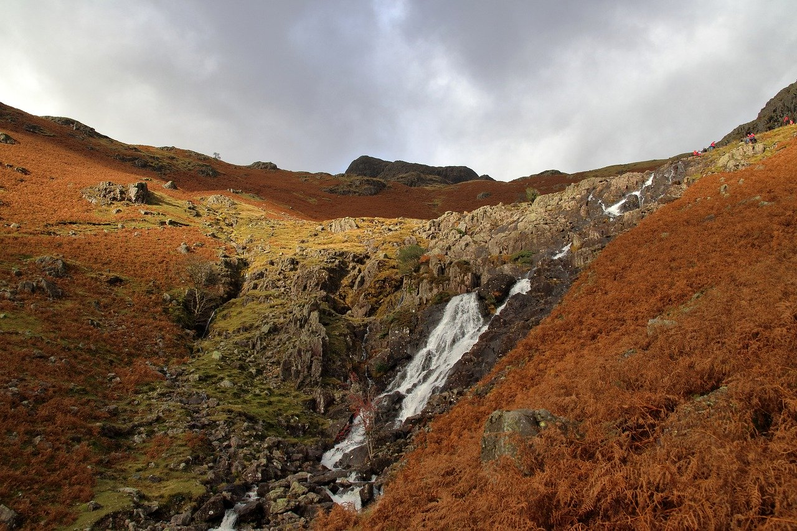
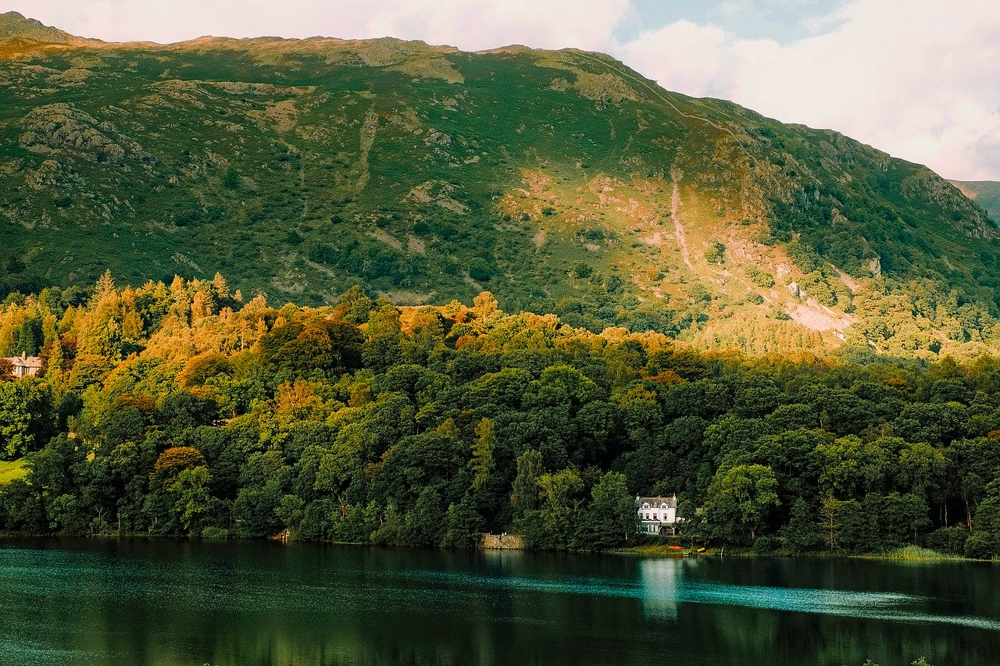
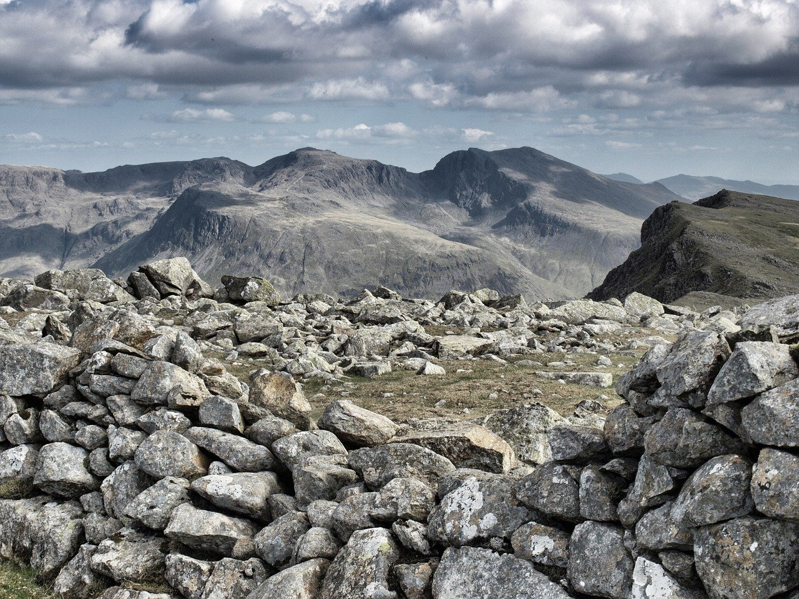
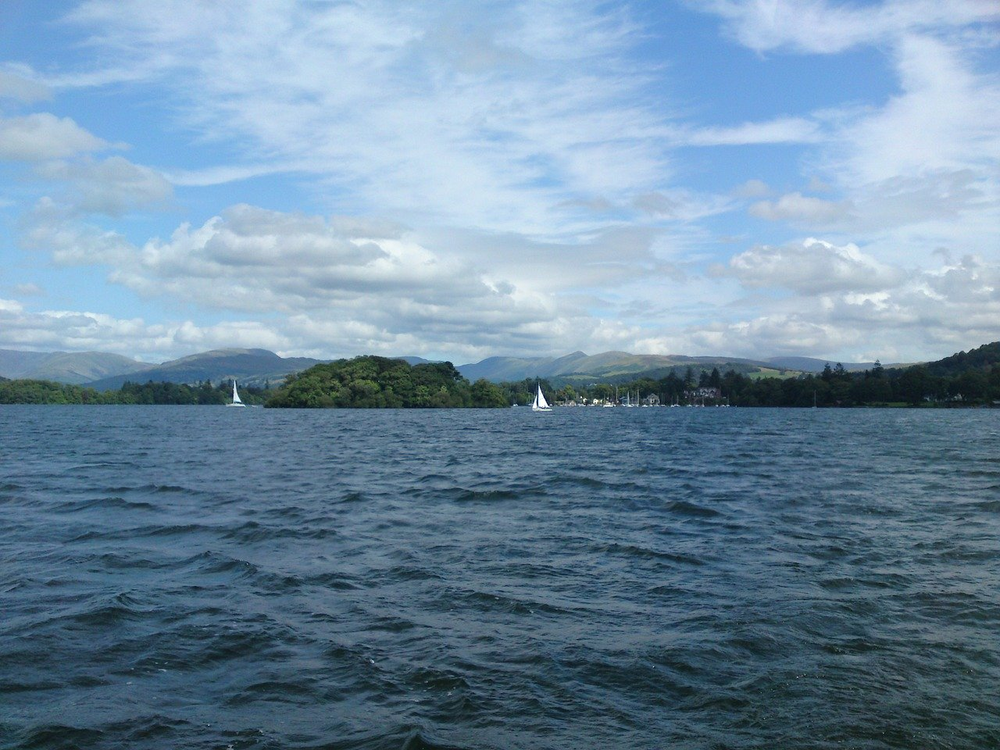

Aira Force Waterfalls
Aira Force is no ordinary waterfall. A true display of power and beauty which must be seen to be believed. If water levels are high then you’ll be in for an amazing show.
Ullswater

This is a magical Lake with magnification mountain scenery to the south and over to the north you’ll find softer rolling hills. The Lake is seven and half miles long and a mile across placing Ullswater as the second largest lake in England.
Grasmere
Tucked in the heart of the Lake District Grasmere is a delight to explore. The village is charmed with cute cottages, shops, pubs and cafes and famous Grasmere Gingerbread where Sarah Nelson once lived and worked.
Coniston Boating Center

The Lake is five miles long and a mile wide. At Coniston Boating Centre you can hire motor boats, rowing boats, canoes and sailing boats to allow you to explore and immerse yourself in the blissful tranquillity the area offers.
Scafell Pike
Scaling Scafell Pike will be an adventure!It’s 978 metres high and is England's highest mountain. When you reach, you’ll enjoy spectacular views of the surrounding fells.
Windermere
Windermere lake, at 10.5 miles long, one mile wide and 220 feet deep, is the largest natural lake in both the Lake District and in England, and is fed by numerous rivers.